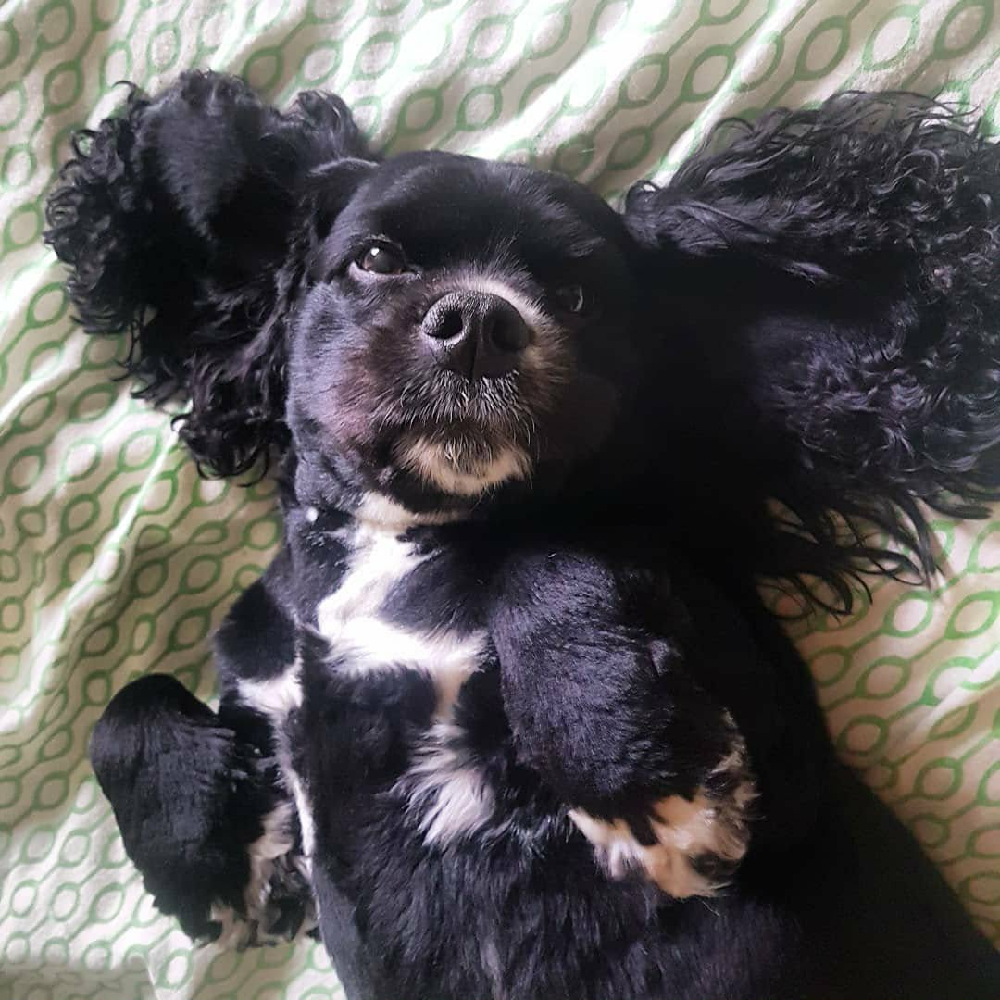
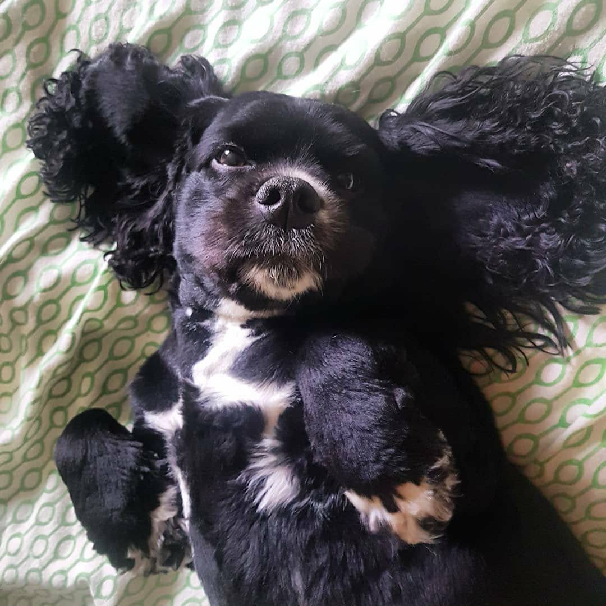
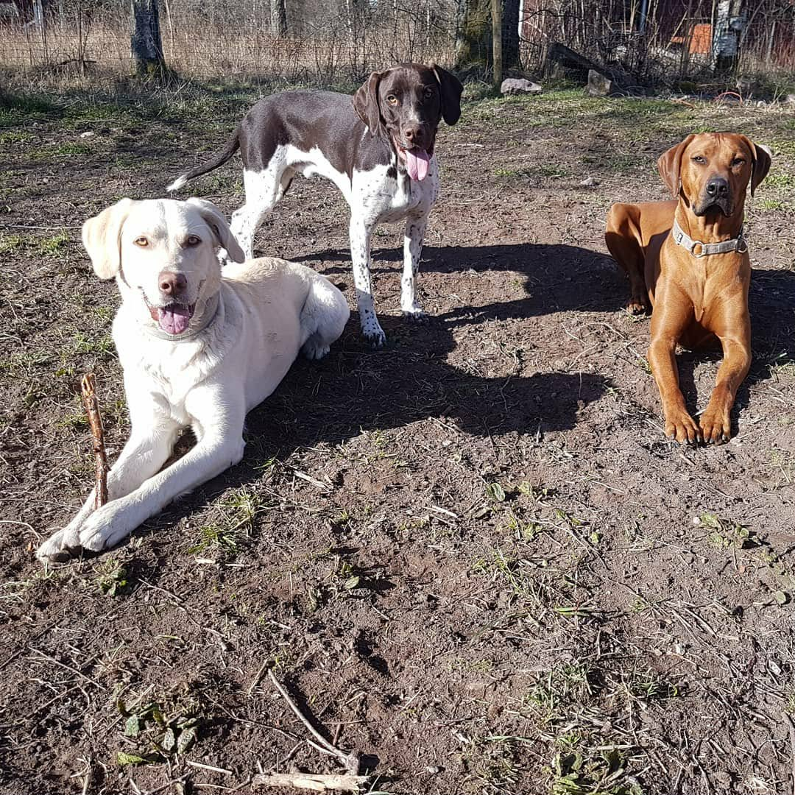
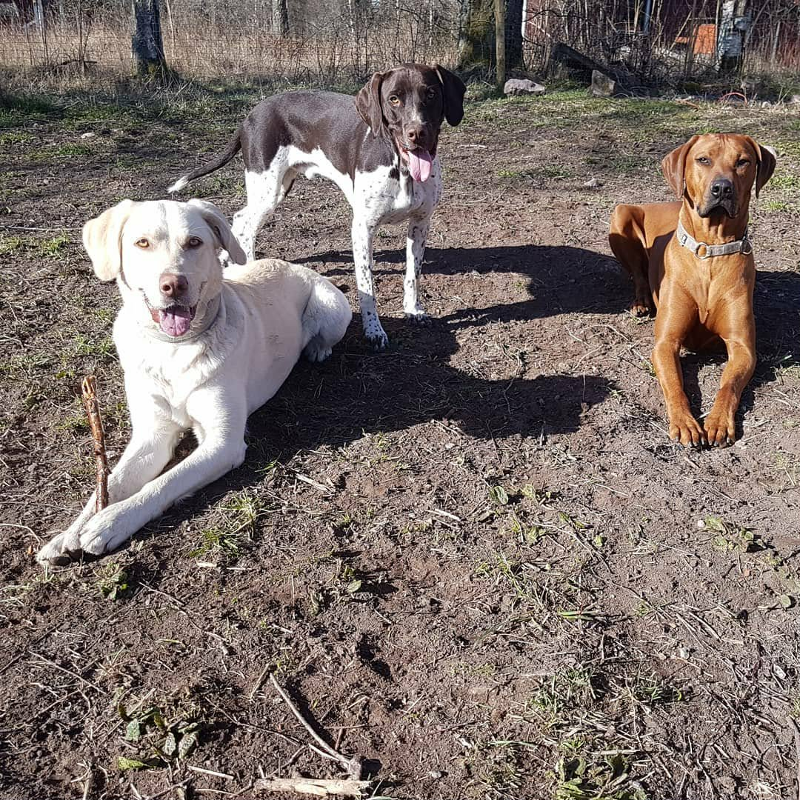

FAQ
Måste hanhunden vara kastrerad?
På hunddagiset tar vi inte emot okastrerade hanhundar. Men på pensionatet tar vi emot alla hundar.
Kan min hund komma mnär den löper?
Ja, din tik är välkommen även då.
Krävs vaccination?
Ja det är obligatoriskt, samt försäkring.
Hur stora grupper?
Ca 3-6 hundar per grupp ute. I sitt egna rum -1-3 hundarkompisar.
Hur fungerar hämtning?
Du lämnar mellan 06-10 och hämtar mellan 15-18. Det kan komma olika tider varje dag.
Kan man ha enstaka dagar?
På pensionatet ja. På hunddagiset kan du komma minst 1 dag/ vecka.
Tar ni problemhundar?
Det beror på vilket “problem” hunden har. Vi har haft många hundar som aldrig haft en hundkompis innan, eller varit rädd och skällig mot andra hundar. Det brukar vara mycket utvecklande för hunden när den får leka med andra kompisar. Alla hundarna på dagiset hittar snabbt en kompis som dom gärna tillbringar tid med.
Bildgalleri
Tips: Beskär gärna bilderna till liknande format för snyggare känsla.


 



 


Tjänster & Priser
🐾 Hunddagis
Mån–Fre schema:
06-10 Lämning
10-12 Rastning
12-14 Vila
14-15 Rastning
15-18 Hämtning
Gruppindelning finns för små och stora hundar.
4 dagar/vecka – 2900 kr
3 dagar/vecka – 2600 kr
2 dagar/vecka – 2400 kr
❌ Inga okastrerade hanhundar.
50% rabatt på hund nummer två om du har två hundar.
🚗 Premium rastning med hämtning hemma
Vår premium rastning är en exklusiv tjänst för dig som vill ge din hund extra kvalitetstid under dagen när du jobbar. Vi hämtar din hund hemma runt kl 12 och kör till stora inhägnade naturområden där hunden får springa lös, nosa, leka och aktiveras i trygg miljö under uppsikt. Tjänsten passar perfekt för dig som: • Har en hund som är ensam hemma många timmar • Vill ge din hund extra motion och mental stimulans • Vill ha en smidig lösning utan egen hämtning och lämning Efter aktivering lämnar vi tryggt tillbaka hunden hemma hos dig.
50% rabatt på andra hunden om du har två hundar
🏨 Pensionat
Pensionat är för hundar som behöver sova över hos oss när du reser bort eller inte kan ta med hunden.
390 kr / dag (mån–fre)
Lör & Sön 590 kr / dag
Aftnar & röda dagar 990 kr
Hämtning utanför tider 290 kr extra
50% rabatt på andra hunden om du har två hundar. Om du vill boka in hunden på en lång vistelse så ger ytterligare rabatt.
Vår vardag
Google recensioner
Hitta hit
Mossebo 13, 543 91 Tibro
Kontakt & Intresseanmälan
Kontakt
Telefon: 076-650 15 82
WhatsApp: Starta chatt
Adress: Mossebo 13, 543 91 Tibro
Öppettider: Lämning 06–10 • Hämtning 14–18
Hunddagis i Tibro • Hundpensionat i Tibro • Hundomsorg i Tibro kommun